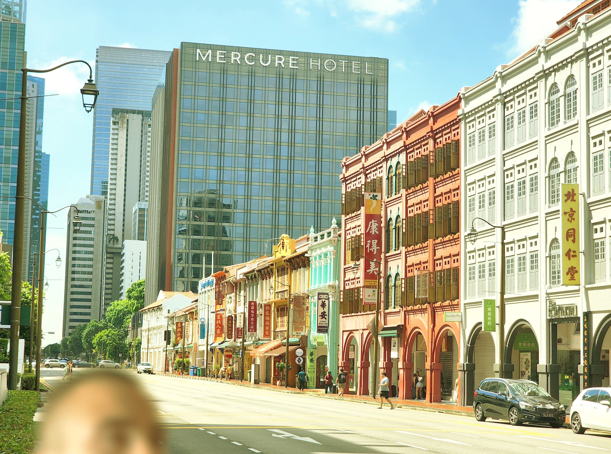
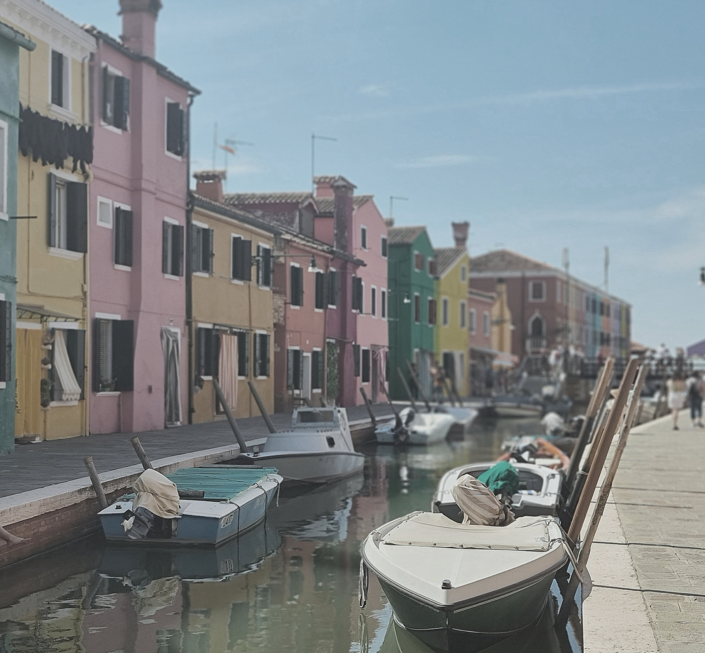
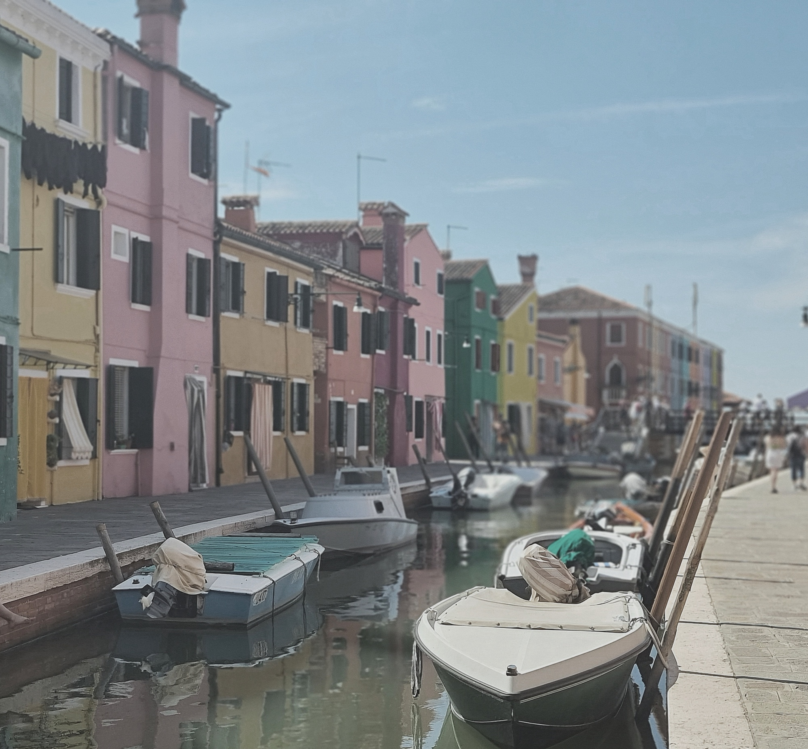

Från original till redigerad bild
Bildredigering
Här visas de tre fotografierna före och efter bearbetning i Photopea. Varje motiv har fått egna justeringar av färg, ljus eller utsnitt.
Bild 01 · Stadsgatan
En fasad i ny färg
Jag har justerat färgbalans, ljusstyrka och kontrast. En utvald fasad har ändrats från rödaktig till turkosgrön genom en markering och verktyget Nyans/mättnad (Hue/Saturation).


Bild 02 · Kanalen
En himmel utan flygplan
Jag har justerat ljusstyrka och kontrast. Flygplanet på himlen har tagits bort med punktlagningspenseln (Spot Healing Brush).


Bild 03 · Vid vattnet
Färgbalans och ett tätare utsnitt
Jag har minskat det gulgröna färgsticket med Färgbalans (Color Balance) och justerat ljusstyrka och kontrast. Överflödig himmel har beskurits bort.